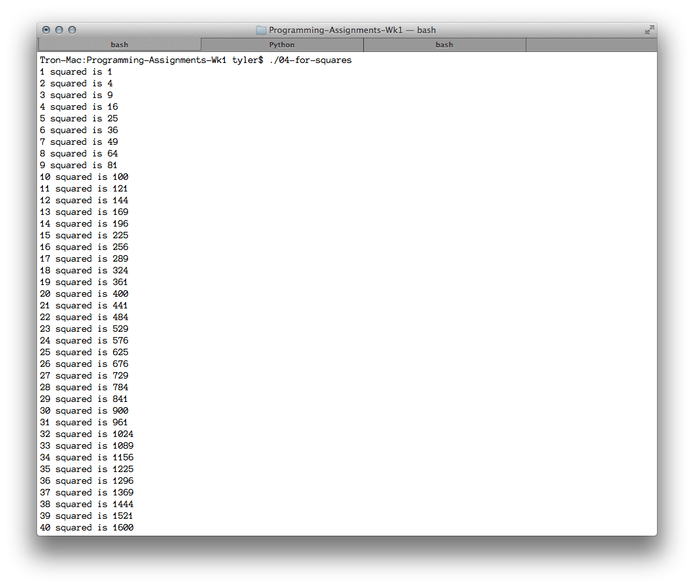

---

layout: default
title: 04-for-squares

---

{% highlight c++ %}
// Tyler Mumford
// Write code that uses a for loop and prints out a list of the squares of n from n=1 to n=100, giving n and n^2.

#include <stdio.h>

int main () {
	int n;

	for (n = 1; n <= 100; ++n)
	{
		printf("%d squared is %d\n", n, (n*n));
	}
}
{% endhighlight %}



